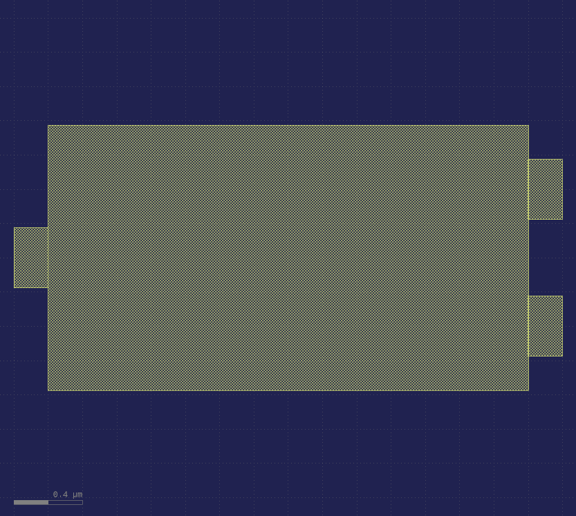
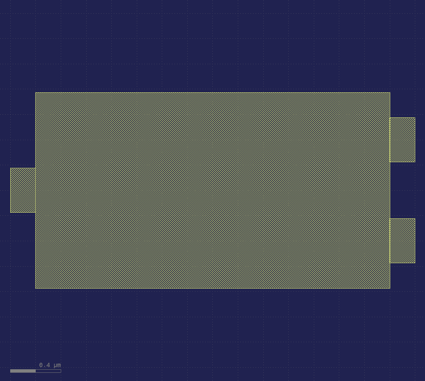

NIST SOEN Process Design Kits - deploy 22¶
This technology package, a.k.a process design kit (PDK), defines the NIST superconducting optolectronics process: OLMAC. It is in the klayout format of technology definition.
OLMAC combines superconducting electronics, such as SNSPDs and three-terminal devices, active optoelectronics, such as LEDs and modulators, and passive optics, such as waveguides and resonators.
Contributors: Sonia Buckley, Adam McCaughan, Jeff Chiles, Alex Tait, Saeed Khan, Jeff Shainline, Rich Mirin, Sae Woo Nam
NIST, PML, Applied Physics, Faint/Quantum Nanophotonics group, Boulder, CO, United States
What’s in the box¶
Design Layers¶
GDS layers, datatypes, names, and appearance in the .lyp format
- klayout_layers_OLMAC.lyp
Main design layers
- camera_ready_OLMAC.lyp
Another layer appearance specification that is better for making figures in powerpoint or papers.
PCells¶
This PDK includes standard devices as fixed cells (GDS) and phidl code (python). See the link above for usage instructions. These HTML pages include optical/electron micrographs and measured data of the standard devices.

 

Design Rules¶
They are visually explained in this documentation (not yet). A .lydrc file is included to integrate with klayout’s DRC engine.
Layer Stack (this will link to the powerpoints)¶
Thicknesses, materials, and fabrication steps.
Cross Sections: you can visualize the cross-sectional geometry of any layout in KLayout
Platform Properties¶
Measured behavioral properties of the platform, such as waveguide loss and wire resistance.
Warning
Some of these properties are not yet measured, as indicated in the properties files (.xml).
Note
These are just XML files. We have a package in development that allows you to read these properties into phidl and use them in your layout/analysis code. Updates to come.
Mask preparation procedures¶
Section not finished. These files are found in the dataprep directory and run with the lymask package.
If you are a user, you probably don’t have to worry about it.
Acknowledgements¶
PDK structure was modeled around the General Silicon Photonics (GSiP) tech found within the SiEPIC-Tools project: (Lukas Chrostowski, Zeqin Lu, Jonas Flueckiger, Xu Wang, Jackson Klein, Amy Liu, Jaspreet Jhoja, and James Pond)
This documentation is templated upon lightlab, the experimental frameworks of the Princeton Lightwave Research Laboratory: (Alex Tait, Thomas Ferreira de Lima, Bhavin Shastri, Mitch Nahmias, Heidi Miller, Siamak Abbaslou, Philip Yechi Ma, Chaoran Huang, Aashu Jha, Eric Blow, and Paul Prucnal)